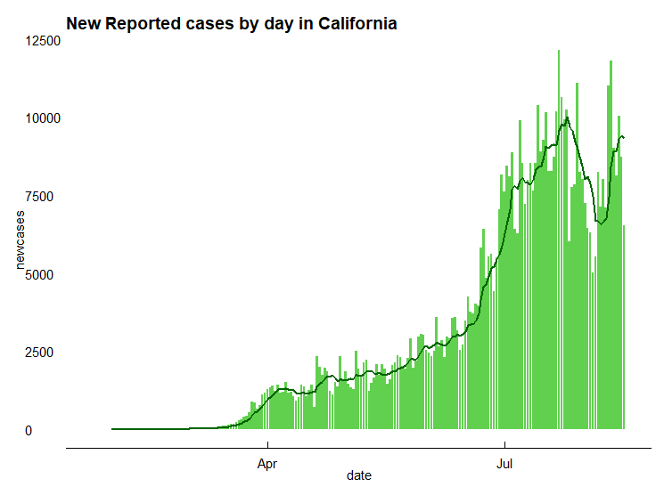
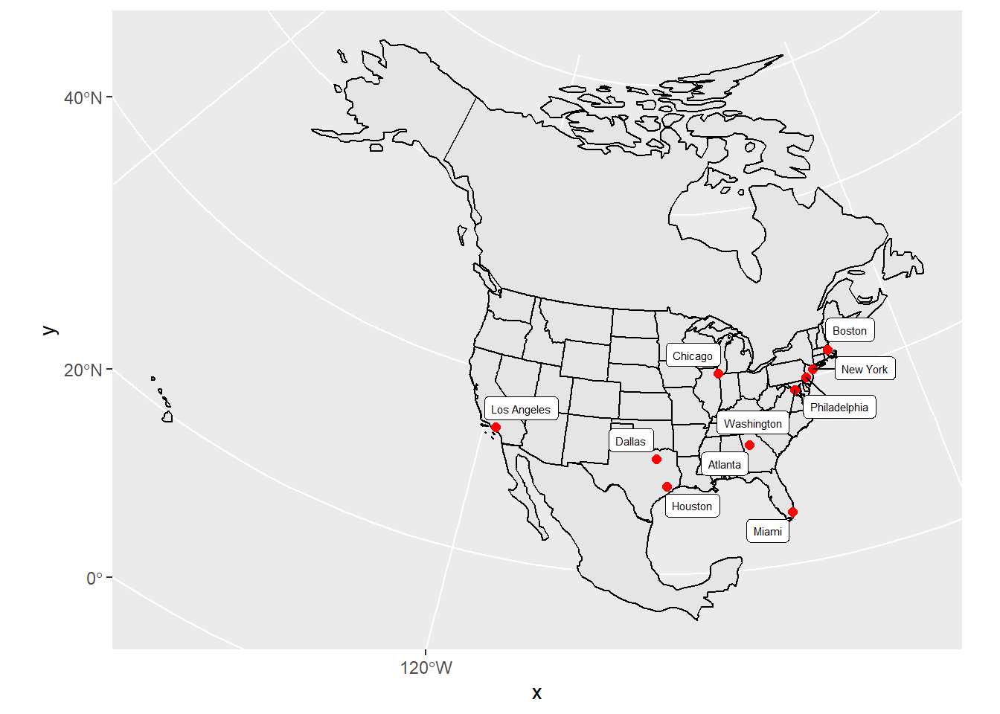
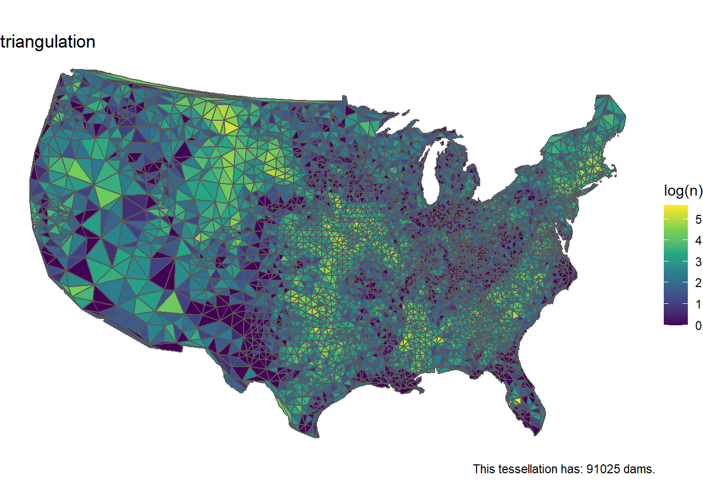
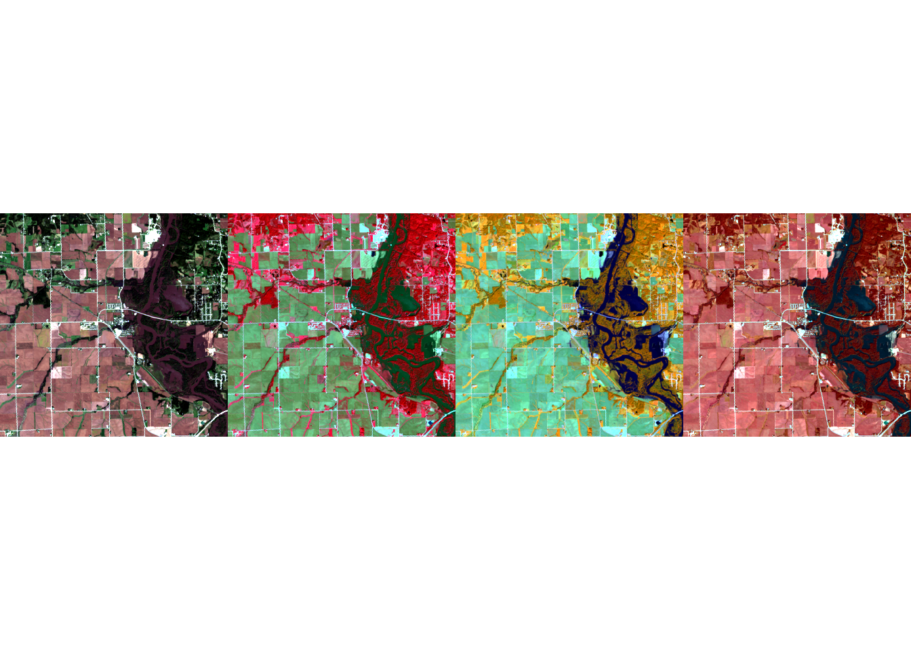
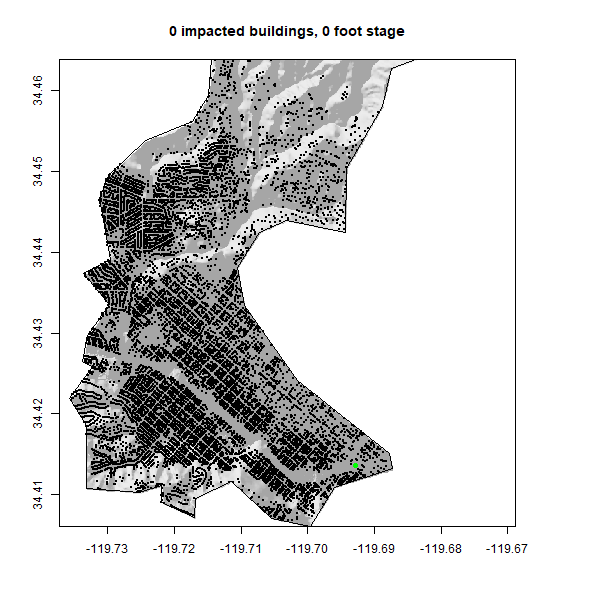

In the summer of 2020 I took a class GIS course based in R. I wrote some code, and did some cool data science. Here is a collection of links!
- In this assignment we learned the basic requirements to build an R Markdown website.
- Created a GitHub repository to display the course projects.
- Add personalizations to the website in order to make it our own.

- Loaded in raw data to filter, manipulate, and analyze.
- Practice visualization skills via real-time pandemic data.
- Present data in tables and figures.

- Created sf objects of the US from CSV files.
- Calculated distances from US cities to the national, state, Mexican, and Canadian borders.
- Plotted findings using ggplot.

- Looked at impacts of tessellated surfaces using national dam data.
- Mapped US counties using Voronoi, triangulation, hexagonal, and gridded tessellations.
- Created functions to expedite mapping tasks.

- Used raster data from Landsat to analyze the impacts of a flood in Palo, Iowa.
- Using the raster package, categorized flood images using the multiband imagery.

- Analyzed a flood event in Santa Barbara, California.
- Mapped the boundary of the river basin, the river, and the buildings (including railways) inside the basin. _ Created a GIF showing the buildings affected by the flood at different stages.